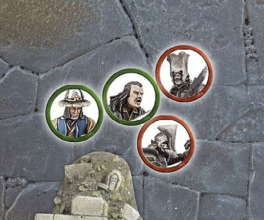
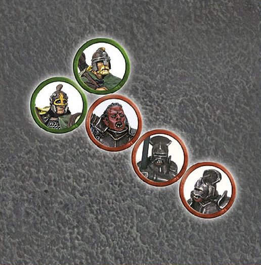
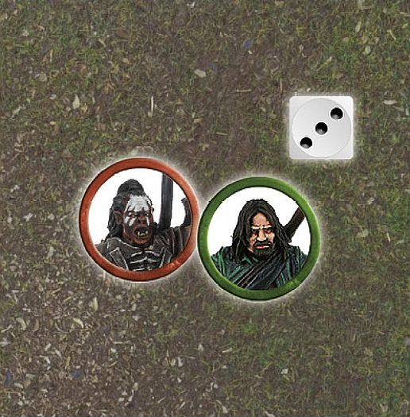
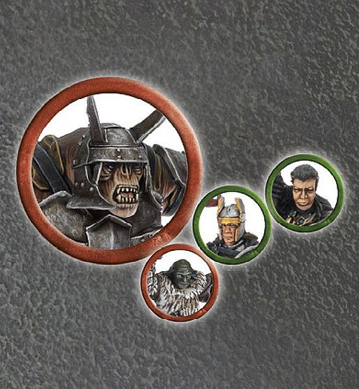

Weapons and Wargear
Weapons in Middle-earth come in a wide variety of shapes and sizes; from the beautifully elegant blades crafted with the skill of the Elves, to the hardened axes wrought from iron and steel by the expert smiths of the Dwarf holds, or the crude and wicked weapons wielded by the Orcs of Sauron's armies. There are even some weapons that have, through the valourous deeds their wielder's performed in battle, carved themselves into legend.
Up until now we have made no distinction in how a model is armed or what kind of armour it may have, nor have we discussed any specific kinds of wargear, such as banners or war horns. There is a huge variety of different weapons, armour and equipment that are available to your models, many of which can have a massive impact on their effectiveness, from how deadly they are in combat, to how well protected they will be.
WHAT WARGEAR DOES A MODEL HAVE?
Every model will have a wargear entry included in their profile. Here you will find a list of all the weapons that they are carrying, as well as any armour they may be wearing and any equipment the model is carrying. For convenience, we have split this section of the rules manual into separate sections for close combat weapons, missile weapons, equipment and armour.
CLOSE COMBAT WEAPONS
Close combat weapons are used for fighting an enemy within the swirling melees that take place on the battlefield. They range from concealed pocket-sized daggers to huge pikes.
There are occasions in which a model may be armed with two close combat weapons, such as a sword and a spear. In these situations, the controlling player must state which of the model's weapons will be used immediately before the Duel roll, unless they have a special rule that states otherwise.
SINGLE-HANDED WEAPONS
Single-handed weapons come in a wide variety of shapes and sizes, from knives and axes to clubs and swords. This category encompasses most weapons that can be comfortably wielded with one hand.
In each model's profile it will be stated what kind of weapon they possess. Single-handed weapons are only used in close combat and a model fighting with a single-handed weapon follows all the normal rules for duelling and striking blows. Wherever a weapon is listed without it being defined as either a hand-and-a-half or two-handed weapon, the weapon in question will be a single-handed weapon.
HAND-AND-A-HALF WEAPONS
Many weapons have been expertly crafted, making them incredibly versatile in the right hands. These weapons can be wielded with a single hand yet, when used with the proper application of force, can cause as much devastation as a blade twice their size. These weapons are called hand-and-a-half weapons.
A hand-and-a-half weapon can be used as either a single-handed weapon or a two-handed weapon. Whenever a model armed with a hand-and-a-half weapon is involved in a Fight, the controlling player must decide at the start of the Fight whether they will be using their weapon as a single-handed weapon or a two-handed weapon.
TWO-HANDED WEAPONS
Two-handed weapons are larger and more unwieldy than their single-handed counterparts, but, when used right, can be even more devastating.
A model using a two-handed weapon in combat may not use a shield at the same time (not enough hands!), although they may still carry other items (slung on their backs or in packs).
A model using a two-handed weapon in close combat suffers a -1 penalty to Duel rolls. When a model makes Strikes with a two-handed weapon, add 1 to its To Wound roll. Thus, a roll To Wound of a 3 becomes a 4, a 4 becomes a 5, and so on. Note, in cases where two rolls are required (e.g., 6/4+), this will affect both rolls.
SPECIAL STRIKES
Many different types of single-handed weapons, hand-and-a-half weapons and two-handed weapons can be used to make Special Strikes. Look at the model's profile to see if they are armed with one of the following weapons: axe, club, dagger, flail, hammer, mace, maul, pick, scourge, staff, sword or whip. A model fighting with one of these weapons can make the relevant Special Strike for that weapon ([see page 87]).
UNARMED MODELS
Most fighters are armed with some form of weapon, and even those who cannot carry swords or shields are often equipped with natural 'weaponry' such as fangs or claws. There are some, however, who carry no weapons at all — usually peaceable types who would rather not raise their hands in violence.
A model is only Unarmed if they are clearly labelled as such in the Wargear section of their profile. An Unarmed model suffers -1 to their Duel rolls and -1 to their To Wound rolls.
SPECIAL WEAPONS
There are a few weapons that require special explanation. Whilst these are not necessarily complex to use upon the battlefield (after all, a spear is one of the simplest of weapons for a soldier to wield), their rules are a little more complicated or their effects are unusual.
SPEARS
Armies who use spears in large numbers are able to present a bristling wall of sharpened metal that is hard to penetrate.
An Infantry model that is armed with a spear may assist a friendly model, with the same base size or smaller, in a Fight in a special way. If an unengaged model armed with a spear is in base contact with a friendly model, then it may contribute a single Attack to the Fight using its own Fight value and Strength.
Models that are assisting another model in this way are not considered to be part of the Fight and so cannot be targeted by Strikes, benefit from a Heroic Combat, be knocked Prone by a charging Cavalry model or be knocked Prone if the combat is itself knocked Prone for some other reason. They may, however, benefit from the effects of a friendly banner.
A model armed with a spear may use it as a hand weapon in the Fight phase, although they may not make Special Strikes when using it. A model that fires a missile weapon during the Shoot phase may not support during the Fight phase.
If the model using a spear is a Hero, they may still use Might points to improve a Duel roll and when rolling To Wound, but may not declare Heroic Actions in the Fight phase if they chose to support.
In a multiple combat, the model using a spear may choose to Strike a different target to the model they are Supporting.
A model can only gain Support from one spear-armed model at a time, and a spear-armed model may only Support a single model during each turn. A spear- armed model can even Support a friendly model that is Prone or armed with a two-handed weapon. A spear-armed model may Make Way for their ally if they lose a Fight. This counts as the one model who is allowed to Make Way for a friend.
SPEARS AND PIKES

Bard is locked in a Fight against a pair of Gundabad Orcs, so a Lake-town Militia, who is armed with a spear, rushes to his aid. Because the Lake-town Militia is in base contact with Bard, the Militia can provide Support. In the Duel roll, the controlling player will roll three dice for Bard as usual, and one extra dice for the Militia.

An Uruk-hai Captain is holding the centre of the Uruk-hai battle line. Because the Captain is Supported by two Uruk-hai with pikes, in addition to his own 2 Attacks, their controlling player will roll one extra dice for each of the Supporting Uruk-hai with pikes.
WAR SPEARS
Unlike the long and heavy lances used by many cavalry, war spears are somewhat lighter in comparison. Heavy enough that when mounted they can still do considerable damage to an enemy, yet still light enough to be wielded effectively whilst on foot.
A war spear follows the rules for spears when wielded by an Infantry model and follows the rules for lances (see page 86) whilst wielded by a Cavalry model.
PIKES
Long, blade-tipped weapons that form a bristling wall of sharp metal, pikes are designed to be wielded in several ranks. A well-ordered formation of pikemen can halt even the most formidable Cavalry charge.
Pikes require two hands to use. Otherwise, the rules for pikes are the same as those for spears (see previous page) with the following exceptions. A pike-armed model can Support a friend Engaged in close combat by being in base contact with another pike-armed model that is already doing so (note they must both be pikes; neither can be a spear), so two pike-armed models can Support one comrade. Just as with a spear-armed model, this creates an exception to the ordinary Fight rules, in that the bearer does not need to be in base contact with an enemy model. Due to the fact that a pike requires the use of two hands to use effectively, a model armed with a pike that is also equipped with a shield, bow or a crossbow suffers a -1 penalty to its Duel rolls.
As models with pikes can effectively fight in battlelines three models deep, it can be very easy for them to trap their own models as only one model may Back Away, not two. This is a serious hazard of supporting in such depth.
ELVEN-MADE WEAPONS
The ornately fashioned weapons crafted by the Elves are forged to be as light as a willow- switch, yet as unbending as stone. When combined with the incredible agility of an Elf, or other skilled warriors, these weapons are perhaps the deadliest of all.
Models using an Elven-made weapon are more likely to win the dice roll to see who wins a Drawn Combat. A Good model using an Elven-made weapon will win the roll-off on a 3-6 instead of a 4-6. Should an Evil model be using an Elven-made weapon (an odd situation, granted), they will win the roll on a 1-4. If both sides are using Elven-made weapons, neither receives an advantage.
MASTER-FORGED WEAPONS
Forged by the greatest smiths Middle-earth has to offer, and made from the most precious of metals, Master-forged weapons are some of the most deadly in Middle-earth. Whether they possess a keener edge, are lighter, are more finely balanced, or infused with some darker power, these weapons have been woven into legends of their own making.
Models using a Master-forged weapon do not suffer the -1 penalty to the Duel roll for using a two-handed weapon.
LANCES
Lances are used by charging cavalrymen. In the hands of a skilled rider they can deliver a powerful blow, made all the more deadly by the mount's momentum.
A Cavalry model using a lance receives a bonus when making Strikes in a turn that they have Charged; add 1 to their roll To Wound — thus, a score of 2 becomes 3, 4 becomes 5 and so on. Note, in cases where two rolls are required (e.g., 6/4+), this will affect both rolls. A Cavalry model using a lance even gets this bonus against other Cavalry models, as long as it has Charged, although not if it is within difficult terrain.
If a Cavalry model with a lance dismounts, or their steed is slain, they will ordinarily abandon their lance, resorting to using another hand weapon.
STAFF OF POWER
The wizards known as the Istari carry Staffs of Power as symbols of their authority. Far more than mere props however, these staffs also serve as reservoirs of willpower and resolve.
A Staff of Power is a hand-and-a-half staff, and may use the Stun Special Strike like all other staffs. In addition, the bearer can expend 1 point of Will each turn without reducing their own Will store.
WHIP
Whips are long leather strips used to lash out at those nearby. With a powerful crack, whips can tear into the flesh of their targets and on rare occasions even inflict fatal wounds.
A whip counts as a throwing weapon ([see page 88]) with a range of 2" and Strength 1.
CHANGING THE WEAPONS ON A MODEL
Although all of our models come with specific weapon types listed in their profile, this has not always been the case, and there may be instances where you may have changed the weapon on your models (either for aesthetic reasons or to give one of your warriors an 'edge' in battle).
If a Warrior model or an unnamed Hero model has one of the following weapons modelled onto it, then it may exchange that type of weapon for another type from the same list, at the extra cost of 1 point for a Warrior and a cost of 5 points for a Hero:
Axe, club, dagger, flail, hammer, mace, maul, pick, staff or sword.
Note: You may only swap a weapon for one of the same class, ie, a single- handed sword for a single-handed mace, and not a hand-and-a-half or a two-handed weapon.
For example, a Warrior of Minas Tirith is listed as being armed with a sword and costs 7 points — a Warrior of Minas Tirith that has been modelled with a flail will instead cost 8 points.
A High Elf Warrior is listed as being armed with an Elven-made hand-and-a-half sword and costs 9 points — a High Elf Warrior that has been modelled with an axe will instead cost 10 points.
Models that have been converted to wield more than one different type of weapon must decide which type they will be using before the game starts.
SPECIAL STRIKES
Before either player makes a Duel roll, they may opt to use the Special Strike associated with their model's weapon. Below, you'll find a list of all the Special Strikes that can be made, and the weapons that can make them.
BASH (HAMMERS, MACES AND MAULS)
Many fighters choose to fight wielding fearsome hammers or maces. These brutish weapons deliver powerful concussive damage, capable of crumpling helmets, breaking bones or even throwing an enemy from their feet.
A model armed with a mace, maul or hammer may opt to Bash. If the bashing model's side wins the Duel roll, they may attempt to knock a single opponent (of their choice) Prone instead of making Strikes. Both models roll a further D6 and add their Strength value. The basher adds a further 1 to this total if the hammer, mace or maul is two-handed. If the bashing model's total is equal to or higher than their opponent's total, that opponent is immediately knocked Prone. In a multiple combat, it is often a good idea to do the Bash first, as if successful, other friendly models within the multiple combat may benefit from the enemy being knocked Prone if the Bash is successful.
FEINT OR STAB (DAGGERS AND SWORDS)
Swords are weapons that can be truly deadly in the hands of a trained fighter. Whether the weapon is formed of three feet of sharpened steel, such as the blades forged in Gondor, a long, slender scimitar preferred by the Elves, or a thick-bladed short-sword of Dwarven make, the blade can be equally deadly in the hands of a skilled and daring fighter.
A model armed with a dagger or sword, who has an equal to or higher Fight value at the start of the fight than their opponent (including any Supporting models), may opt to Feint. If they do so, they reduce their Fight value by D3 when working out who wins the Fight. If the feinting model's side wins the Duel roll, however, they may re-roll any To Wound rolls of a 1.
A model armed with a dagger or sword, who has a lower Fight value at the start of the fight than their opponent (including any Supporting models), may opt to Stab. If they do so, they may re-roll 1s To Wound if their side wins the Duel roll. However, due to the reckless abandon with which a stabbing model tends to throws themselves at their enemy, if their side loses the Duel roll, they will suffer one Strength 2 hit immediately after the Fight has been resolved.
FEINT OR STAB

Aragorn is fighting against Lurtz upon Amon Hen, and they both decide that they wish to use a Special Strike with their sword. As Aragorn has the higher Fight value of 6 he elects to Feint, reducing his Fight value by D3. Rolling a 3, Aragorn reduces his Fight value by 2 and is now Fight 4. As Lurtz started the Fight with the lower Fight value (Fight 5), he may only elect to Stab — even though Aragorn has Feinted and is now Fight 4.

This Warrior of Númenor is fighting a Mordor Troll with sword and an Orc Warrior with sword, and is being supported by Gil-galad. The Orc may only choose to Stab as its Fight value is lower than its opponent's. The Warrior of Númenor can also only choose to Stab, as the Mordor Troll has a higher Fight value. Even though the Mordor Troll has a higher Fight value than the Warrior of Númenor, it can also only choose to Stab as Gil-galad's Fight value is even higher.
PIERCING STRIKE (AXES AND PICKS)
Axes and picks are easy to manufacture and incredibly dangerous to those who fight against them. Whilst they lack the agile nature of a sword, their bladed head, combined with the momentum of a swing, can hack through armour with alarming ease and can pierce even the toughest of hides.
A model armed with an axe or pick can opt to make a Piercing Strike. If their side wins the Fight, increase the model's Strength by 1 when they Strike. If their side loses the Fight, reduce the model's Defence by D3 when Strikes are made against it.
STUN (CLUBS AND STAFFS)
Stout sticks, gnarled wooden clubs, walking sticks and staves are common weapons of defence for those in Middle-earth. These are preferred by those who seek to restore order with a clonk on the head, rather than by killing, such as the Hobbits of The Shire.
A model with a club or staff may opt to Stun their opponent. If the model's side wins the Fight, rather than striking normally, choose one opponent and roll a D6. On a 5+ (or a 6 if the target is a Monster), the victim is reduced to a Fight value and Attacks value of 1, and Shoot value of 6+, until the end of the following turn. You may wish to place a marker next to the stunned model as a reminder.
WHIRL (FLAILS, SCOURGES AND WHIPS)
When readying for a strike, the wielder of a flail or whip leaves themselves exposed for a moment, but as the weapon swings at its victims, its true power is revealed.
A model with a flail, whip or scourge may opt to Whirl. A model that Whirls reduces their Fight value to 1, after all other modifiers, for the duration of the Fight. Should a model that Whirled win the Fight, they do not Strike as normal. Instead, they make a single Strike against every enemy model Engaged in the Fight.
MISSILE WEAPONS
Missile weapons are used to make shooting attacks. As with close combat weapons, they come in all shapes and sizes. If a model has a missile weapon, it will be listed on their profile. If a model is armed with two or more missile weapons, the controlling player must declare which weapon is being used before rolling To Hit.
BOWS
Bows come in a wide variety, from the long, elegantly curved bows of the Elves to the stunted, crude bows fashioned by Orcs.
The term bow covers a wide range of weapons including bows, Elf bows, Dwarf bows and great bows, but since they all work in much the same fashion, we have a simple set of rules to represent them all. The major differences between the various types of bow are the characteristics that the bow has (see the Missile Weapon chart below). A model can shoot a bow in the Shoot phase provided it has not moved more than half of its maximum allowance in the preceding Move phase.
CROSSBOWS
Crossbows are mechanical weapons that use tension to loose short, heavy bolts at the foe. They sacrifice speed for significantly increased penetrating power.
A model with a crossbow may not fire it in the same turn that it has moved.
MISSILE WEAPON CHART
| Name | Range | Strength |
|---|---|---|
| Blowpipe | 12" | 2 |
| Bow | 24" | 2 |
| Crossbow | 24" | 4 |
| Dwarf bow | 18" | 3 |
| Dwarf longbow | 24" | 2 |
| Elf bow | 24" | 3 |
| Esgaroth bow | 24" | 3 |
| Great bow | 24" | 4 |
| Longbow | 24" | 3 |
| Orc bow | 18" | 2 |
| Short bow | 18" | 2 |
| Slingshot | 12" | 1 |
| Throwing spear | 8" | 3 |
| Throwing weapon | 6" | 3 |
| Uruk-hai bow | 18" | 3 |
THROWING WEAPONS
From carefully balanced knives and axes, to crudely sharpened lumps of metal, throwing weapons are easy to use, even on the move.
Thrown: A model with a throwing weapon can shoot with it in the Shoot phase, even if they have moved more than half of their maximum Move distance. A model cannot fight with a throwing weapon in the Fight phase.
A throwing weapon can be used as its bearer Charges into combat. The player moves the model as if it were going to Charge the enemy, but instead of moving into base contact with their foe, they stop 1" away. They then throw the weapon at the enemy they are about to Charge. This shot is resolved using the rules for shooting, even though it takes place in the Move phase. Throwing weapons thrown as a model Charges into combat do not suffer the -1 penalty for moving and shooting.
If the target is not slain, the charger then moves into base contact with the same enemy model. If the original target is slain, the charger may complete their move in any way the controlling player wishes — stopping straight away, charging another target or anything in between.
Throwing Weapons do not count towards an army's bow limit.
Throwing spears follow the rules for throwing weapons, but have a slightly different profile (see the Missile Weapon chart).
BLOWPIPE
Short-ranged but accurate, blowpipes can be exceedingly deadly at close range. Their darts are often coated with toxins that can cause a rapid, and excruciating, death.
A model can shoot a blowpipe in the Shoot phase, provided it has not used more than half of its maximum allowance in the preceding Move phase. Additionally, a blowpipe benefits from the Poisoned Weapons special rule.
Blowpipes do not count towards an army's bow limit.
SLINGSHOT
Unusual, and not especially deadly, a well-used slingshot can still be a menace.
A model armed with a slingshot can shoot twice if they have remained stationary, or once if they move up to half of their maximum Move distance. If they move more than half of their maximum Move distance, they may not fire the slingshot at all in this phase.
EQUIPMENT
BANNERS
Many armies proudly carry banners or battle-flags to war, acting as reminders of their homeland, or the oaths they have sworn before battle. When the fighting is fiercest, warriors will rally around these flags and fight with renewed ferocity to ensure that their colours stay flying.
A banner provides a single re-roll to friendly models who are involved in a Fight within 3". Whether it is a model fighting on their own, or several friends all fighting against a common enemy, you can re-roll one D6 in each Duel roll to see who wins. This re-roll can be made after your opponent has rolled their own dice to see who wins, but must be made before any Might points are spent to adjust scores.
It makes perfect sense that a banner must be flying in order for its bearer's allies to gain the benefits of it being near, and as such a banner bearer must be standing for the effects of a banner to count. Models cannot benefit from the effects of a banner if the bearer is Prone.
It is possible that one player may re-roll a dice and find themselves winning the Fight — in which case their opponent may wish to use a banner of their own. Remember, a banner only provides one re-roll to each Duel roll.
Any model carrying a banner is encumbered by its weight, and suffers a -1 penalty to their Duel rolls.
A Warrior model carrying a banner who is slain may pass it on to a friendly Warrior model (but not to a Hero model), who is in base contact, not Prone, and is not Engaged in a Fight. Swap the models over if they are the same type of Warrior, or find a suitable banner-carrying substitute in your collection.
ELVEN CLOAKS
Elven cloaks are woven through with wondrous enchantments that hide the wearer from even the most piercing gaze.
A model wearing an Elven cloak has the Stalk Unseen special rule ([see page 106]).
WAR DRUM (X)
The sound of a drum makes those following it march to its beat. The faster the drummer plays, the faster the army marches.
At the start of the Move phase, a model with a war drum may declare they are sounding the advance. When this occurs, all models with the same keyword as the one shown in brackets, within 12" of the drummer, add 3" to their Movement value if they have the Infantry keyword, and 5" to their movement they have the Cavalry keyword or the Fly special rule for the remainder of the turn. Models that are affected by a war drum may not Charge in that turn.
WAR HORNS
Whether it sounds a clarion call or a braying scream, a war horn can lift the hearts of friendly warriors and remind them why they fight.
If you have one or more war horns on the battlefield, all models in your force have +1 Courage.
THE ONE RING
Forged in the fires of Mount Doom, this seemingly plain ring lies heavy with Sauron's power and malice.
WEARING THE RING
The model with the Ring (the Ringbearer) can put it on at any time during their Move phase. As soon as they do so, they become Invisible. If a model who put on the Ring is mounted, their steed will bolt and they must immediately take a Thrown Rider test.
INVISIBLE
Whilst they wear the Ring, the Ringbearer cannot be directly targeted by Magical Powers or shooting attacks (and does not count as In The Way). The Ringbearer has no Control Zone while invisible and enemy models may even move 'through' the Ringbearer. If an enemy model wishes to end its movement on the space the Ringbearer is taking up, move the Ringbearer the minimum distance to place them out of the way — this could involve hopping low walls, moving through foes or being shoved off a cliff!
If an enemy wishes to Charge the Ringbearer while they wear the Ring, it must pass a Courage test, applying a penalty of -1 to the roll for every 1" the Ringbearer is away from the foe. Models that automatically pass Courage tests still need to make this test, as it represents them being able to see the Ringbearer, not how terrifying the Ringbearer is. During the Fight phase, any enemy model Engaged in combat with an invisible Ringbearer halves its Fight value for the duration of the duel.
None of the above rules apply to Sauron or Ringwraith models. Indeed, they actually gain some benefit, as described in their own special rules or the Will of Evil special rule.
REMOVING THE RING
If the controlling player wishes the Ringbearer to take off the Ring, they need to pass a Courage test to remove it. This test can be taken at any point during the Ringbearer's Move phase, once it has been established which side has control of their movement (see below). If the test is failed, the Ringbearer must wear the Ring until the next turn, when they will have another chance to remove it. The Ringbearer cannot both put on and take off the Ring in the same turn.
SAURON'S WILL
If the Ring is already being worn, then the controlling player must test to see if the Ringbearer can overcome Sauron's will. To do so, they must roll a dice immediately before they move the Ringbearer in the Move phase. If the player does not wish to move the Ringbearer, they must still roll a dice — but can do so at any time during their Move phase. The roll is made on behalf of the Ringbearer themself, so we allow the controlling player to use the Ringbearer's Might points to modify this dice roll if they wish to do so. On a 3+, the controlling player moves the Ringbearer as usual. On a 1 or 2, the opposing player moves the Ringbearer instead of the controlling player. Regardless of which side moves the Ringbearer, they are still part of the controlling player's side and all other actions, such as shooting and fighting, remain under the control of the controlling player. This means that when the opposing player moves the Ringbearer, all they can do is move the model, including Charging (in this case, the Ringbearer does not need to take Courage tests to Charge terrifying foes). They cannot perform Heroic Actions and cannot pick up or put down other items. They cannot be forced to perform actions that would cause direct harm to the model (such as jumping down a cliff...) or be moved off the table (if the Scenario allows). This represents the struggle between the Ringbearer and the will of Sauron.
MY PRECIOUS!
During Matched Play and Open Play games, if the Ringbearer is the only model left on the controlling player's side and is wearing the Ring, they count as a casualty — their mind has been taken over by its power. As Scenarios may depend on them surviving, this is very important! If the opposing side's objective is to kill the Ringbearer, this is achieved if they are the only model remaining on the table from the controlling player's side and they are wearing the Ring.
There may be the odd occasions in Matched Play and Open Play games where there is more than one model on the board with The One Ring. As The One Ring is the only one of its kind (the clue is in the name), we have created a hierarchy of who carries the Ring when this occurs. The model closest to the top of the hierarchy table will get the Ring.
-
The Dark Lord Sauron
-
Isildur
-
Bilbo Baggins (from the Thorin's Company army list) or Bilbo Baggins, Master Burglar (from the Survivors of Lake-town army list).
-
Frodo Baggins
-
Bilbo Baggins (from The Shire or Rivendell army list)
-
Gollum
In the rare situation where both players control models that have the Ring, and both models are the same on the hierarchy table, both players may use the Ring — although one is clearly a fake and only the winner of the battle can claim that theirs was the real one.
ARMOUR
There are many different types of armour in Middle-earth, from formidable Dwarf mail to the rusted scrap-armour worn by Orcs.
Wearing armour provides a Defence bonus to the wearer. Typically this is already included in the model's profile. Sometimes, however, a model will have an option to buy further armour for additional points. In these cases, look below to see the effect the armour has.
ARMOUR
A model upgraded to wear armour adds 1 to their Defence.
HEAVY ARMOUR AND DWARF ARMOUR
A model who is upgraded to wear heavy armour or Dwarf armour adds 2 to their Defence, unless they are already wearing armour, in which case they add 1.
HEAVY DWARF ARMOUR
A model who is upgraded to wear heavy Dwarf armour adds 3 to their Defence, unless they are already wearing armour, in which case they add 2. If they are already wearing heavy armour or Dwarf armour, they instead add 1.
Note that this list is not exhaustive and that there are other types of armour available, but these are explained explicitly where they are listed.
SHIELDS
From crude planks of wood banded together with iron, to ancient, crafted masterpieces, almost every army in Middle-earth makes use of shields to protect its warriors.
A shield increases the Defence characteristic of its bearer by 1. Where the shield is listed in the model's wargear, that bonus is already taken into account in its characteristics profile. However, if the model purchases the shield as an upgrade, you will need to increase its Defence by 1. Shields also have the following rules:
Cumbersome: If a model uses a hand-and-a-half weapon as a two-handed weapon whilst carrying a shield, it will lose the +1 bonus to their defence for the duration of the fight. A model armed with a bow, crossbow, two-handed weapon or pike may carry a shield; however, they do not receive the +1 bonus to their Defence characteristic.
Shielding: Prior to either player rolling any dice in a Duel roll, a shield-armed model who is involved in the Fight may declare that they are Shielding. A model that is Shielding doubles their Attacks when making the Duel roll to see who wins the Fight. Thus, a Shielding model with 1 Attack would roll two dice. If the Shielding model wins the Fight, however, they make no Strikes against the enemy, having put all of their effort into surviving.
In a Multiple Combat, all friendly models in the same Fight must be Shielding for them to get the bonus. Thus, if one or more friendly models do not have shields, then none of them can use the Shielding rule. Spear and pike-armed models cannot Support a Shielding model.
Models who are Prone can use the Shielding rule like other fighters -- in fact this is a very sound plan, since a Prone model cannot make Strikes if they win the Fight anyway.
Cavalry models cannot use the Shielding rule.